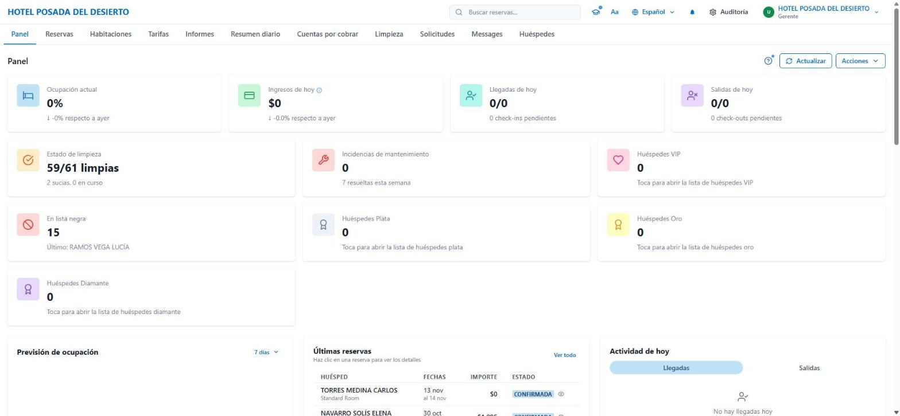

1
Ubícate en el Panel
El Panel tiene dos partes: arriba, tarjetas con cifras; abajo, bloques con listas y gráficas. Desplázate hacia abajo para ver todo.

- 1Pestaña Panel: te trae aquí desde cualquier pantalla.
- 2Actualizar vuelve a cargar las cifras. Úsalo si llevas rato con la pantalla abierta.
- 3Acciones: menú con atajos. Tiene Ver reservas.
- 4Tarjetas: las cifras del día. Las ves en las secciones 2 y 3.
- 5Bloques: llegadas y salidas, últimas reservas y previsión. Los ves en las secciones 4 y 5.
En tu turno: si las cifras no cuadran con lo que ves en el mostrador, pulsa Actualizar antes de preocuparte.